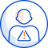
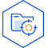
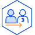
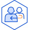
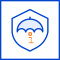

국립공주병원은 정보주체의 자유와 권리 보호를 위해 「개인정보 보호법」 및 관계 법령이 정한 바를 준수하여, 적법하게 개인정보를 처리하고 안전하게 관리하고 있습니다.
이에「개인정보 보호법」제30조에 따라 정보주체에게 개인정보의 처리와 보호에 관한 절차 및 기준을 안내하고, 이와 관련한 고충을 신속하고 원활하게 처리할 수 있도록 하기 위하여 다음과 같이 개인정보 처리방침을 수립·공개합니다.
| 주요 개인정보 표시 라벨링 | |||||
|---|---|---|---|---|---|
|  |  |  |  | ||
|  | |||||
| 개인정보파일의
명칭 (시스템명) |
운영근거 / 처리목적 | 개인정보 항목 | 보유 기간 |
|---|---|---|---|
| 환자진료정보 (국립병원 정보시스템) |
「의료법」 제22조 및 동법 시행규칙 제14조 및 제15조, 「정신건강증진 및 정신질환자 복지서비스 지원에 관한 법률」 제30조 및 동법 시행규칙 제23조 / 환자의 진료 및 요양급여 비용 청구 | 정보주체
|
10년 |
| 국가입퇴원
관리시스템 입퇴원정보 (국가입퇴원 관리시스템) |
정신건강증진 및 정신질환자 복지서비스 지원에 관한 법률 제67조(입·퇴원등관리시스템의 구축·운영) 동법 시행령 제33조(입·퇴원관리시스템의 구축·운영) 및 제39조(민감정보 및 고유식별정보의 처리) | 필수항목 : 이름, 집연락처, 집주소, 핸드폰(연락처), 직장연락처, 직장주소, 주민등록번호, 건강, 인적사항, 입원등일자, 진단명, 입원등필요성, 대면조사 신청여부, 입원등으로 전환하였는지 여부, 정신의료기관, 환자 직업, 발병시기, 발병일, 퇴원 등 일자, 퇴원후 입원기관․시설 명칭 법정대리인
|
준영구 |
| 입원적합성심사
위원회 소위원회 구성명단 (국가입퇴원 관리시스템) |
정신건강증진 및 정신질환자 복지서비스 지원에 관한 법률 제46조 | 필수항목 : 이름, 핸드폰(연락처), E-mail, 직장연락처, 성별, 생년월일, 소속기관명 기재 | 5년 |
| 공무원 인사정보 (e사람 표준 인사시스템) |
「공무원 인사기록·통계 및 인사 사무 처리 규정」,「공무원 인사· 성과기록 및 전자인사관리 규칙」 | 필수항목 : 이름, 생년월일, 집연락처, 집주소, 핸드폰(연락처), E-mail, 직장연락처, 직장주소, 주민등록번호, 소속, 직위, 직급, 디지털식별코드, 사진, 임용사항, 학력사항, 가족사항, 병역사항, 외국어사항, 유사경력사항, 무술사항 | 준영구 |
| 비공무원 인사정보 (e사람 표준 인사시스템) |
「보건복지부와 그 소속기관 공무직 및 기간제근로자와 관리규정」, 「공무직 근로자 등 인사관리 업무처리지침」 | 필수항목 : 이름, 생년월일, 집연락처, 집주소, 핸드폰(연락처), E-mail, 직장연락처, 직장주소, 주민등록번호, 소속, 직위, 직급, 디지털식별코드, 사진, 임용사항, 학력사항, 가족사항, 병역사항, 외국어사항, 유사경력사항, 무술사항 | 준영구 |
| 공무원 급여 정보 (e사람 표준 인사시스템) |
「공무원보수규정」,「공무원수당 등에 관한 규정」, 「소득세법」 제127조 | 필수항목 : 이름, 생년월일, 핸드폰(연락처), E-mail, 주민등록번호, 소속, 직급, 근무년수, 호봉, 계좌번호, 부양가족정보, 인사사항, 채권압류내역 | 준영구 |
| 비공무원 급여 정보 (e사람 표준 인사시스템) |
「보건복지부와 그 소속기관 공무직 및 기간제근로자관리규정」제19조, 「소득세법」제127조 | 필수항목 : 이름, 생년월일, 핸드폰(연락처), E-mail, 주민등록번호, 소속, 직급, 근무년수, 호봉, 계좌번호, 부양가족정보, 인사기록사항 | 준영구 |
| 공무원 비상연락망 | 「국가공무원 복무규칙」 제45조 (직원 연락체계의 유지) 및 제47조 (직원 비상소집 명부) | 필수항목 : 이름, 집주소, 핸드폰(연락처) | 퇴직 및 전출시까지 |
| 개인정보파일의
명칭 (시스템명) |
운영근거 / 처리목적 | 개인정보 항목 | 보유 기간 |
|---|---|---|---|
| 정신건강전문
간호사 수련생 정보 (정신건강전문요원 관리시스템) |
「정신건강증진 및 정신질환자 복지서비스 지원에 관한 법률」 제17조 및 동법 시행령 제39조 / 정신건강전문간호사 수련 관리 |
|
3년 |
| 인권교육 신청정보 (교육신청 관리시스템) |
「정신건강증진 및 정신질환자 복지 서비스 지원에 관한 법률」 제70조 (인권교육) 및 동법 시행규칙 제50조 | 필수항목 : 이름, 핸드폰(연락처), E-mail, 직장연락처, 직장주소, 시설종류, 직종, 직위 | 3년 |
| 재난 정신건강 서비스 이용자 및 연구 참여자 정보 (재난 정신건강 사례관리시스템) |
재난 및 안전관리 기본법 제66조, 개인정보 보호법 제15조(개인정보의 수집·이용) 및 제23조(민감정보의 처리 제한)에 따라 동의 받아 운영 | 필수항목 : 이름, 생년월일, 핸드폰(연락처) | 10년 |
| 제공받는 자 | 제공받는 자의 개인정정보 이용목적 | 제공하는 개인정보 항목 | 제공시기 | 제공근거 |
|---|---|---|---|---|
| 국민건강보험공단, 건강보험심사평가원 | 국민건강보험 및 의료급여환자의 요양급여비용 청구 | 성명, 주민등록번호, 건강보험증 번호, 보험가입자 성명, 진료일, 진료과명, 상병명(병명), 처방내용, 본인부담금 및 비용청구액 등 | 매월 | 「국민건강보험법」제47조, 「의료법」 제21조 |
| 국세청 | 국세청 연말정산 간소화 서비스 | 연말정산 관련자료/성명, 주민등록번호 등 | 연1회 | 「소득세법」제165조 |
| 국민연금공단 | 국민연금지급 및 장애등록심사 | 성명, 주민등록번호, 진료기록 등 | 요청시 | 「국민연금법」 제123조, 「장애인복지법」 제32조, 「의료법」 제21조 |
| 근로복지공단 | 산업재해 보상보험 환자의 급여비용 청구 | 성명, 주민등록번호, 건강보험증번호, 보험가입자 성명 등 | 요청시 | 「산업재해보상보험법」제45조 |
| 시,군,구청 | 의료급여 수급권자확인 | 성명, 주민등록번호, 진료기록, 진료비 내역 등 | 요청시 | 「의료급여법」 제5조, 11조, 「의료법」 제21조 |
| 법원, 검찰청 | 사건수사 관련 | 성명, 주민등록번호, 진료기록 등 | 요청시 | 「형사소송법」 제106조 , 제215조, 제218조, 「의료법」 제21조 |
| 병무청 | 병역판정 관련 | 성명, 주민등록번호, 진료기록 등 | 요청시 | 「병역법」 제11조, 「의료법」 제21조 |
| 위탁대상 | 위탁받는 자 | 위탁업무의 내용 | 위탁기간 |
|---|---|---|---|
| 차세대 국립병원정보시스템(MEDIRO) 및 국립병원 EMR시스템 |
한국보건의료정보원 | 차세대 국립병원정보시스템(MEDIRO) 유지관리 및 운영 | 2024. 1. 1.～ 12. 31. |
| 국립병원 EMR시스템 유지관리 및 운영 | 2024. 1. 1.～12. 31. | ||
| (재위탁) 이지케어텍(주) | 차세대 국립병원정보시스템(MEDIRO) 유지관리 및 운영 | 2024. 1. 1.～12. 31. | |
| (재위탁) 더아이티(주) | 국립병원 EMR시스템 유지관리 및 운영 | 2024. 1. 1.～12. 31. | |
| 차세대 국립병원정보시스템 구축 | 이지케어텍(주) | 차세대 국립병원정보시스템 구축 사업 하자보수 업무 | 2024. 5. 1. ～ 2025. 4. 30. |
| (재위탁) 카카오헬스케어 | 무선망 구축에 따른 교육 및 가동 | 2024. 5. 1. ～ 2025. 4. 30. | |
| (재위탁) 엘씨테크 | 이미지 전환 업무 | 2024. 5. 1. ～ 2025. 4. 30. | |
| 직원건강검진 서비스 | 현대이지웰 | 건강검진 서비스 관리에 관한 사항 | 2024. 2. 23.～ 12. 31. |
| 교육신청관리시스템 | 세림티에스지 컨소시엄 (세림티에스지(주), ㈜이룸, ㈜플랜아이) | 교육신청관리시스템 (홈페이지) 운영 및 유지관리 | 2024. 1. 1.～12. 31. |
| X-RAY | 대한결핵협회 (대전세종충남지부) | X-RAY 원격 판독 | 2024. 1. 1.～12. 31. |
국립공주병원은 재화 또는 서비스를 제공하는 과정에서 공개되는 정보에 정보주체의 민감정보가 포함될 수 있습니다. 민감정보의 공개 가능성이 있는 경우 본처리 방침을 통해 비공개를 선택하는 방법에 대해 공개하도록 하겠습니다.
| 구분 | 부서 | 직위 | 성명 | 연락처 |
|---|---|---|---|---|
| 개인정보 보호책임자 | 기획운영과 | 과장 | 노옥균 | 041-850-5719 |
| 개인정보 보호담당자 | 기획운영과 | 주무관 | 정재영 |
| 개인정보파일명 | 부서명/담당자 | 연락처 | 팩스번호 |
|---|---|---|---|
| 환자진료정보 | 기획운영과(원무)/의무기록담당 | 041-850-5746 | 041-853-2639 |
| 정신건강전문간호사 수련생 정보 | 간호과/교육담당 | 041-850-5901 | 041-852-5940 |
| 인권교육 신청정보 | 정신건강사업과(마음건강팀) | 041-850-5884 | 041-853-5985 |
| 재난 정신건강 서비스 이용자및연구참여자정보 | 정신건강사업과(트라우마대응팀) | 041-850-5839 | 041-850-5890 |
| 입원적합성심사위원회 및 소위원회 구성명단 | 정신건강과(입원적합성심사팀) | 041-850-5845 | 041-855-6969 |
| 국가입퇴원관리시스템 입퇴원정보 | 정신건강과(입원적합성심사팀) | 041-850-5845 | 041-855-6969 |
| 공무원 인사정보 | 기획운영과(서무팀) | 041-850-5720 | 041-855-6969 |
| 비공무원 인사정보 | 기획운영과(서무팀) | 041-850-5712 | 041-855-6969 |
| 공무원 급여 정보 | 기획운영과(서무팀) | 041-850-5715 | 041-855-6969 |
| 비공무원 급여 정보 | 기획운영과(서무팀) | 041-850-5715 | 041-855-6969 |
| 공무원 비상연락망 | 기획운영과(서무팀) | 041-850-5714 | 041-855-6969 |